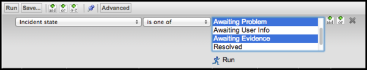
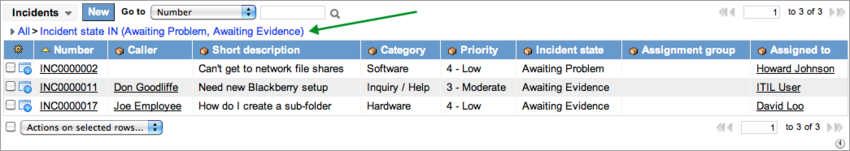

Using Filters and Breadcrumbs
| |
Note: This article applies to Fuji and earlier releases. For more current information, see Filters and Breadcrumbs at http://docs.servicenow.com
The ServiceNow Wiki is no longer being updated. Visit http://docs.servicenow.com for the latest product documentation. |
Contents
1 Overview
As the amount of data that accumulates in ServiceNow grows, it is often necessary to narrow it down to only specific data that is needed for a particular task. You can use filters and breadcrumbs to retrieve and display only the specific data that you need.
2 Filters
A filter is a set of conditions applied to a table in order to find and work with a subset of the data in that table. Users can apply, modify, create, and save filters. The current filter is indicated by a hierarchical list of conditions—breadcrumbs—at the top of the table.
| |
Note: If you create a record from a filtered list, some fields on the record are automatically populated based on the filter conditions. For example, if the filter on the Incident list is [Impact] [is] [2 - Medium] and you click New, the Impact field is automatically set to 2 - Medium. |
3 Breadcrumbs
Breadcrumbs offer a quick form of filter navigation. They are ordered from left to right, with the leftmost condition being the most general and the rightmost condition being the most specific. Clicking a breadcrumb removes all of the conditions to its right. Clicking the condition separator (>) before a condition removes only that condition.
{kind=link}
In the example, clicking Priority = 2 removes the condition Category = Software and returns all active incidents with a priority of 2. By contrast, clicking the condition separator (>) before Priority = 2 removes the condition Priority = 2 and returns all active incidents in the software category. In both cases, removing a condition returns a larger results set. Finally, clicking Incidents goes to the top of the hierarchy, removing all conditions and returning all incidents in the system.
Click a breadcrumb to refresh the list of records and show the latest information from the database for those records.
3.1 Breadcrumb Context Menu
Additional navigational functions are available. Right-click a breadcrumb and select one of the following:
- Open new window: opens the results list for the breadcrumb in a new tab or window.
- Copy URL: copies to the clipboard the URL for the results list of the breadcrumb. Follow browser instructions if browser security measures restrict this function.
- Copy query: copies to the clipboard the encoded query for the breadcrumb. You can use this query in the URL of an instance or in the reference qualifier field of a dictionary entry.
- For example, if you are viewing a list of all active incidents with a high or medium impact, right-click the breadcrumb and copy the query active=true^impact=1^ORimpact=2. You can append this query to the end of the instance URL:
- https://{instance_name}/incident_list.do?sysparm_query=active=true^impact=1^ORimpact=2.
- This selection is not available for the All breadcrumb. Follow browser instructions if browser security measures restrict this function.
{kind=link}
4 Quick Filters
To quickly filter a list using a value in a field, right-click in the field and select Show Matching or Filter Out (for date fields choose from Show Before, Show After, and Filter Out). These functions add a condition as a rightmost breadcrumb of the current filter.
{kind=link}
In this example, right-clicking Active and selecting Show Matching adds the condition Incident state = Active as the most specific condition of the filter. By contrast, right-clicking Active and selecting Filter Out adds the condition Incident state != Active as the most specific condition of the filter.
For date and date-time fields you can also use Show After or Show Before to define a time based filter.
5 Creating Filters
A filter restricts what records appear in a list by providing a set of conditions each record must meet to be included in the list. A condition consists of these parts:
- Field: Each field contains data from a particular column in the list's table. Selecting a reference field allows you to dot-walk to data from other tables.
- Operator: Each field type has its own set of valid operators. The operator sometimes also determines if a value is needed.
- Value: Each field has its own set of valid values determined by the field type. Reference fields have access to auto-complete, and choice lists provide a drop-down list of options.
- Grouping: Each condition line is grouped with either an AND or OR connector. The filter requires all condition lines linked with an AND connector to be met. The filter evaluates each condition line linked with an OR connector separately.
Create filters on a list using the condition builder. To make the condition builder appear every time you open the list, click the Pin/Unpin Filter icon ( in UI15; / in other UIs) so that the pin is pressed down.
in UI15; / in other UIs) so that the pin is pressed down.
{kind=link}
{kind=link}
To create a filter:
- Open the condition builder by:
- Select a field from the drop-down list.
- The field type determines the available operators and values. For example, the Active field may have a value of true, false, or empty, while a text field may have many different values. Similarly, the greater than operator does not apply to the Active field, but it does apply to the Priority field. For more information, see Condition Builder.
- Select an operator from the drop-down list.
- Select or enter a value, if appropriate.
- Add or remove conditions to construct the desired filter:
- To add a top-level condition, click Add AND condition or Add OR conditionon the condition builder tool bar, above the conditions.
- To add a dependent condition, click Add AND condition or Add OR condition beside the condition.
- To remove a condition, click Delete beside the condition.
- To specify the sort order of the results, click Add Sort, then select a field to sort by and a sort order.
- Click Save to keep the filter for future use. For more information, see Saving Filters.
- Click Run to apply the filter.
{kind=link}
{kind=link}
| |
Note: To find all records that do not contain the specified value, create a filter with two conditions: [field] [is not] [value] or [field] [is] [empty]. |
5.1 Using OR Conditions
The condition builder uses two different types of OR conditions, top level and dependent.
Using a dependent OR condition, you can specify alternative criteria to a single operation. Dependent OR conditions work in the manner A and (B or C).
For example, to return a list of all unassigned problem and incident records from the Task table, create a filter with a dependent OR on the Number field.
- [Assigned to] [is] [empty] AND [Number] [begins with] [PRB] OR [Number] [begins with] [INC].
{kind=link}
A top-level OR condition allows you to display the results of multiple filter criteria in a single list. Top level OR conditions work in the manner (A and B) or (C and D).
For example, to return a single list of all active incidents with a category of hardware, and all inactive incidents with a category of software, create two condition sets separated by a top-level OR condition.
- [Active] [is] [true] AND [Category] [is] [Hardware]
- Top level OR condition
- [Active] [is] [false] AND [Category] [is] [Software]
{kind=link}
Top-level and dependent OR conditions can be used together. Filters using both types of OR conditions work in the manner (A or B) or (C or D). By mixing AND conditions with top-level and dependent OR conditions, you can create very specific filters.
5.2 Filtering on Multiple String Values
For a string field, you can create a filter that searches for multiple values by creating a comma delimited list. This feature enables administrators to copy and paste search criteria from a Microsoft Excel spreadsheet into a filter, for example.
- Create the filter with the is one of or is not one of operator.
- All selections from the field's choice list appear.
- Select one or more of the options by using multiple selection key commands.
- 
- The choice list remains visible.
- Click Run to filter the list.
- The filter conditions appear as a comma-delimited string at the top of the results list.
- 
{kind=link}
{kind=link}
| |
Note: Do not use the "is one of" operator on fields that contain commas, the query does not return the expected set of records. Instead, create a filter using multiple "or" statements. |
5.3 Using the Dynamic Operator
The dynamic operator, is (dynamic), lists predefined dynamic filter options where the condition value is computed from a value in a reference field. For example:
| Field | Operator | Dynamic FIlter Option | Description |
|---|---|---|---|
| Caller | is (dynamic) | Me | Computes the value of Caller based on the current user viewing the list. |
| Assignment group | is (dynamic) | One of My Groups | Computes the value of Assignment group based on the current user viewing the list. |
6 Saving Filters
Depending on your access rights, you may save filters for everyone, a user group, or yourself.
To save a filter:
- Create or modify a filter.
- Click Save.
- Enter a name for the filter in the Save as field.
- Select who the filter is Visible to:
- To create a personal filter (all users), select Me.
- To create a global filter (requires access rights), select Everyone.
- To create a filter for a specific user group (requires access rights), select Group and then enter or search for the group name.
- Click Save.
7 Using Saved Filters
To apply a saved filter, select the filter name in the title menu. The filter runs and the breadcrumbs appear.
{kind=link}
To edit or delete personal filters, select Edit personal filters from the title menu. The Filter [sys_filter] table opens with the filter User = [current user]. Filters created from this view are saved as personal filters for the current user.
8 Editing Saved Filters
An administrator can edit any filter.
- Navigate to System Definition > Filters.
- Select the filter you want to edit.
- Modify the Filter conditions. as necessary.
- Click Update.
9 Deleting Filters
Administrators can delete any saved filter: global, group, or personal.
- Navigate to System Definition > Filters.
- Click the filter name and click Delete, then confirm the request.
10 Scripted Filters
The condition builder alone cannot create some filters, such as displaying a record set that is dependent on an unrelated table. Administrators with a knowledge of JavaScript can create JavaScript functions for use in advanced filters.
To use a scripted filter:
- Create a new script include.
- In the script include Script field, create a JavaScript function that returns an array of sys_ids.
- Ensure that the function uses the same name as the script include.
- Ensure that the script include is Active and Client callable.
- Call the JavaScript function from the condition builder.
For more information, see GlideRecord queries and Script Includes.
10.1 Example
A company provides intensive care for a group of customers. To track these services, the service manager needs a high-level journal and links to all incidents that the customers raise.
The company creates a new application, Intensive Care, and a table, u_intensive_care. While the table contains a reference field for the customer name, there is no direct link to the user table. Thus, the manager cannot set up an incident list filter for customers who are under intensive care using the condition builder.
Solution
Write a JavaScript function that uses a GlideRecord query to build an array of user sys_ids in the u_intensive_care table (see sample code, below). Call the function from the condition builder in the Incident table (condition, Caller is javascript:myFunction()).
function myFunction(){ var arrUsers = []; gr = new GlideRecord('u_intensive_care'); gr.query(); while (gr.next()){ arrUsers.push(gr.u_customer.toString()); } return arrUsers; }
11 Dynamic Filter Options
Dynamic filter options enhance filters by allowing users to run a set query against a reference field without having to enter JavaScript code in the condition builder. All dynamic filter options use the is (dynamic) operator and call a particular scripted filter.
{kind=link}
Dynamic filter options are active by default starting with the Dublin release.
To create a dynamic filter option:
- Create a scripted filter as a client-callable script include or business rule.
- Navigate to System Definition > Dynamic Filter Options.
- Click New.
- Enter the Dynamic Filter Option form fields (see table).
- Click Submit.
| Field | Description |
|---|---|
| Label | Enter the text you want to appear as an option when a user selects the is (dynamic) operator. |
| Script | Enter the name of the function you created. |
| Field type | Select Reference. |
| Reference script | Select the client-callable script include or business rule you created for the scripted filter. |
| Referenced table | Select the table this filter option applies to. |
| Available for filter | Select this option to display the option as a filter breadcrumb. |
| Order | Enter a number to designate the placement of this option in the filter option choice list. |
| Roles | Select the role a user must have to see this option. |
| Active | Enable or disable the option. |
11.1 Default Dynamic Filter Options
The following dynamic filter options are available by default.
| Target Table of Reference Field | Option Label | Description |
|---|---|---|
| User [sys_user] | Me | The reference field contains the current user. |
| One of My Assignments | The reference field contains the current user or someone for whom the current user is a delegate for assignments. | |
| One of My Approvals | The reference field contains the current user or someone for whom the current user is a delegate for approvals. | |
| Users With Roles | The reference field contains users that have any role. | |
| Group [sys_user_group] | One of My Groups | The reference field contains a group to which the current user belongs. |
12 Enhancements
12.1 Eureka
- After you run a filter on a list, the column search fields are displayed and filled in with the corresponding search criteria.
12.2 Dublin
- Dynamic filter options have been added.
Contents > Use > Standard User Interface Introduction > Navigation
Contents > Use > Standard User Interface Introduction > Using Common UI Elements
Contents > Use > Standard User Interface Introduction > Using Lists